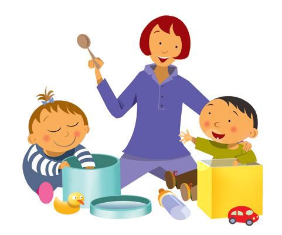

Atención Temprana
La Atención Temprana está universalmente reconocida como un conjunto de acciones que se orientan hacia la prevención y la intervención asistencial de los niños que se encuentran en situaciones de riesgo o que presentan alguna discapacidad.
A la vez, es un conjunto de intervenciones con el que se actúa para poder garantizar las condiciones y la respuesta familiar ante estas circunstancias en los diferentes entornos vitales. Ha trazado las líneas maestras sobre las que debe discurrir ésta, convirtiéndose en el marco de referencia fundamental en cuanto a principios, organización y funciones para planificar, canalizar y responder eficazmente ante la infancia y ante las familias.

Esta definición y los principios recogidos en el Libro Blanco de la Atención Temprana los debemos a un consenso científico interdisciplinar de las diversas especialidades que confluyen en este campo. Se trata de una referencia importante para las administraciones públicas, los profesionales, las asociaciones y las familias.
La Atención Temprana se fundamenta sobre principios científicos de varias disciplinas: Pediatría, Neurología, Psicología, Psiquiatría, Pedagogía, Fisioterapia, Lingüística... Por ello es importante la detección en los distintos ámbitos (con un acceso adecuado a los servicios sanitarios) y en muchos casos la coordinación de las distintas especialidades.
Por último, tras conocer la definición de "Atención Temprana", hemos de remarcar cuál es su objetivo: ofrecer a los niños con déficits o con riesgo de padecerlos un conjunto de acciones optimizadoras y compensadoras, que faciliten su adecuada maduración en todos los ámbitos y que les permita alcanzar el máximo nivel de desarrollo personal y de integración social.